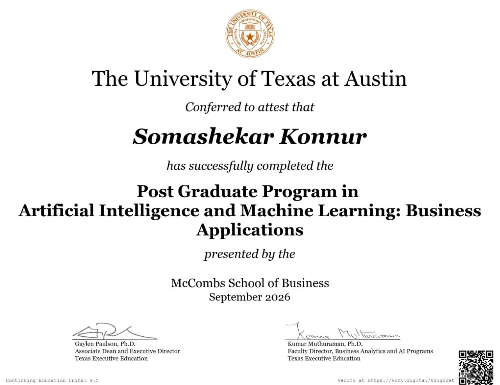
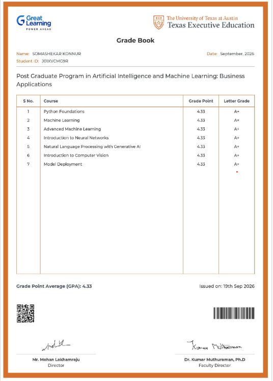

Artificial Intelligence & Machine Learning
Formal postgraduate training complemented by hands-on projects and exploration of enterprise AI application patterns.
Post Graduate Program in Artificial Intelligence and Machine Learning
The University of Texas at Austin · Great Learning
Completed September 21, 2026.
Advanced training across artificial intelligence, machine learning, Generative AI, large language models and practical AI application development. Completed seven hands-on projects with strong academic performance.
Credentials & recognition
AI & ML portfolio
View the public ePortfolio showcasing coursework, learning milestones, and applied AI/ML project work.
View ePortfolio → CredentialTop 5 achiever in PG AI & ML
Ranked 5th in the Post Graduate Program in Artificial Intelligence and Machine Learning, reflecting strong performance and consistent applied learning across AI, ML, and GenAI domains.
Verify credential →
Post Graduate Program in Artificial Intelligence and Machine Learning.

Academic performance record highlighting strong results and top-5 standing.
Coursework & project areas
Machine learning
Predictive modeling, data preparation, exploratory analysis and model evaluation.
Python ecosystem
Python, NumPy, pandas, notebooks and data analysis workflows.
Generative AI & LLMs
LLM application concepts, prompt engineering, RAG and OpenAI API exploration.
Medical Assistant NLP / RAG
Developed a Retrieval-Augmented Generation assistant for healthcare knowledge retrieval, helping clinicians access trusted medical guidance quickly and reduce information overload in complex clinical workflows.
AI-enabled knowledge access
Explored document ingestion, semantic retrieval and response generation to improve access to relevant medical information and support more informed, context-aware decision-making.
HelmNet Image Classification
Developed a helmet detection model for workplace safety using computer vision to classify images as “With Helmet” or “Without Helmet,” improving compliance monitoring and reducing the risk of head injuries in hazardous environments.
Safety monitoring with CNNs
Compared custom CNN architectures and transfer-learning approaches, including VGG-16, to optimize accuracy, robustness and generalization for real-world safety monitoring scenarios.
ReneWind predictive maintenance
Developed a classification-based predictive maintenance solution for wind turbine health using sensor data to detect generator failures before breakdowns. The project emphasized early fault detection, model tuning for high recall and precision, and identifying high-risk signals such as V21, V15, and V16 to reduce replacement costs and support proactive maintenance planning.